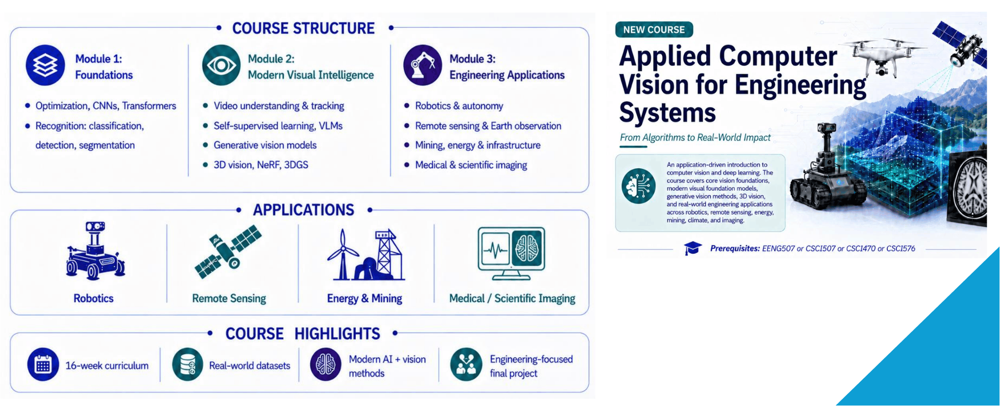
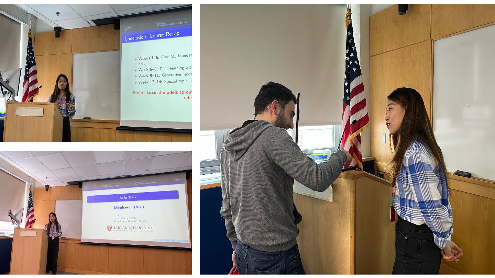

2026 Fall
CSCI 598H: Applied Computer Vision for Engineering Systems (1-page course description)
Computer Science Department @ Colorado School of Mines
Weekly Schedule: Tuesday and Thursdays, 12:30pm-1:45pm
Location: Brown Building W475

Teaching
2026 Fall
Computer Science Department @ Colorado School of Mines
Weekly Schedule: Tuesday and Thursdays, 12:30pm-1:45pm
Location: Brown Building W475

2026 Spring
Lecture 14: Towards Visual Intelligence: Perception, Understanding, and Generation (Invited Lecturer).
2026 Spring
Lecture 11: Video VLM (Invited Lecturer).
2025 Spring - 2026 Spring
2026 Spring: Lecture 8: Self-supervised Learning and Foundation Model.
2026 Spring: Lecture 14: AI for Science, Genomics and Proteomics.
2025 Fall: Lecture 8: Self-supervised Learning and Foundation Model.
2025 Fall: Lecture 14: AI for Science, Genomics and Proteomics.
2025 Spring: Lecture 8: Self-supervised Learning and Foundation Model.
2025 Spring: Lecture 14: AI for Science, Genomics and Proteomics.

2020-2024
Optimization, Data Structure, and Customer Relationship Management.